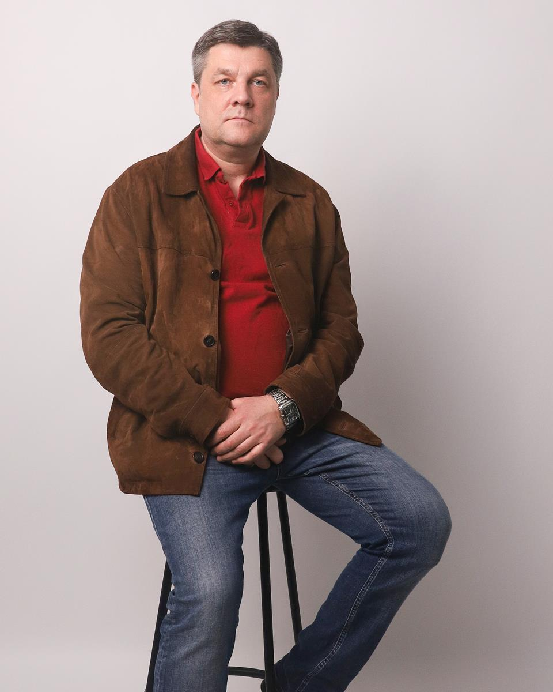

Адвокат · уголовные и гражданские дела
Денис Александрович Ёлкин, адвокат Адвокатской палаты Новгородской области, коллегия адвокатов «Бабиченко и коллеги», № 53/502 в реестре адвокатов. Практика в Великом Новгороде, Москве и Санкт-Петербурге.

Уголовные дела любой категории и сложности
Гражданские дела и споры с органами власти
Арбитраж для компаний
Конфиденциальность
Всё, что вы рассказываете адвокату, защищено адвокатской тайной (статья 8 Федерального закона № 63-ФЗ). Это не зависит ни от обвинения, ни от суммы спора.
Честность
Результат обещать нельзя: исход решает суд. Обещаю честную оценку перспектив до подписания соглашения и добросовестную защиту после него.
Гонорар
Размер гонорара оговаривается с доверителем в индивидуальном порядке и фиксируется письменно до начала работы.
Города
Великий Новгород, Москва, Санкт-Петербург. Дела в других регионах обсуждаются по обстоятельствам.
Достаточно имени и способа связи. Подробности лучше рассказать лично.